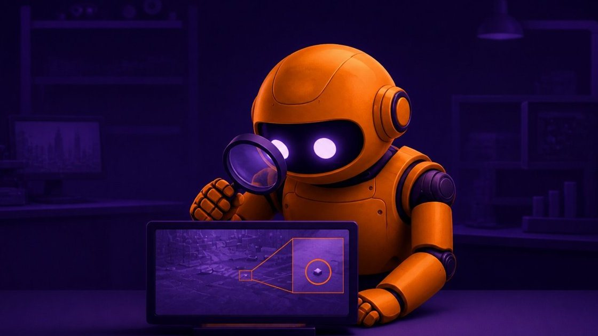
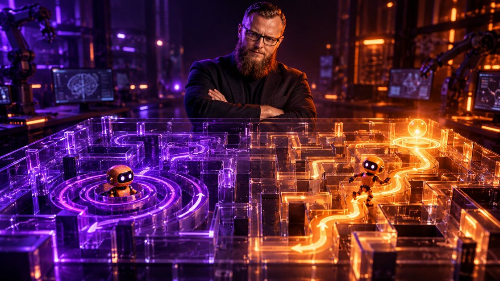

Выпуск № 1Еженедельный журнал об ИИ21–27 ноября 2026
ДАТАИСТ

01
Обычные игровые ИИ-агенты управляют игрой ход за ходом, а языковая модель подсказывает им действия. Coding4Games проверяет другой подход: может ли агент изучить игру и написать программу, которая будет играть самостоятельно — без модели во время проверки.

02
Распознать сгенерированные ИИ-видео трудно, когда дефект спрятан в одном кадре, коротком движении или надписи. WeVisForensics проверяет ролик по отдельным признакам: главный агент выбирает специалиста и момент видео, а затем собирает свидетельства для вердикта.

03
Обычно ИИ-агентов учат играть на видео или примерах действий, но по ним не всегда понятно, приблизился ли игрок к цели. Game2Player превращает веб-игры в задачи с измеримым прогрессом и проверяет игровые среды, прежде чем использовать прохождения для обучения.

OpenAI и Anthropic в последнее время выпускают столько обновлений, что возникает вопрос: за что брать деньги, если ИИ создает приложения по запросу?

Постоянно слышу, как компании называют себя AI-First или AI-Native. А на деле просто раздают сотрудникам подписки на ChatGPT.
Да, термины во многом маркетинговые, общепринятой шкалы нет. Но различия вполне реальные — давайте разбираться.
Открыть пост ↗
Недавно я делился аналитикой о том, что многие недооценивают роль обучения. При этом именно обучение помогает адаптироваться к происходящим изменениям.
Поэтому я стараюсь передавать все, что знаю и использую сам, чтобы помочь другим быстрее войти в новую экономику.
Открыть пост ↗
Andre AI Technologies
ИИ-трансформация вашего бизнеса
Бесплатная диагностика ИИ-зрелости, ИИ-стратегия, ИИ-операционная система «Нейроний» и 3 месяца обучения команды с ментором.
30+компаний
$100+ млнэффекта
10+ летв ИИ

01
Допустим, клиент попросил изменить адрес доставки. Агент сохранил новый адрес, тест пройден.
Но вместе с адресом он поменял способ оплаты, а проверка этого не заметила.
Открыть урок → 
02
Агент может правильно понять задачу и всё равно выполнить её дважды.
Допустим, агент помогает сотруднику оформить командировку. Он выбирает отель, получает согласование и отправляет запрос на бронирование.
Открыть урок →
NrНейроний · ИИ-операционная система
Ведите ИИ-бизнес в ИИ-операционной системе
Единый контекст бизнеса, ИИ-суперагент и 100 готовых ИИ-сотрудников в десяти отделах — от целей и задач до продаж, поддержки и кода.
Попробовать бесплатно →